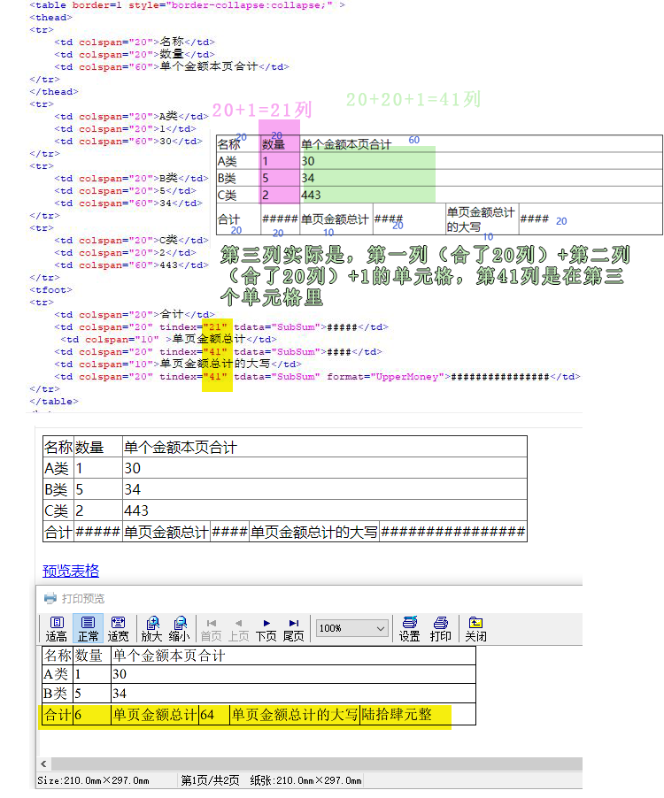

LODOP中ADD_PRINT_TABLE统计带有合并列的指定的列数
以前的博文，LODOP统计table自动分页后的每页的某列合计值
里面测试了统计指定的列。
需要统计的列，如果前面有合并的单元格，需要加一下查看该统计列实际在第几列。
还是用之前博文的表格，做了点修改，新表格是带合并列的，把表格假设为100列，分给一些单元格。
例如：此单元格第三列统计本页数值，该列的计算：
第一行第一个单元格合并了20列，第一行第二个单元格合并了20列，第一行第三个单元格合并了60列。
第三列实际是，第一列（合了20列）+第二列（合了20列）+1的单元格，第41列是在第三个单元格里，所以ADD_PRINT_TABLE统计的列是tindex="41"，第41列。
虽然该表格展现效果看上去是需要统计第3列，但是前面两个有合并列，所以实际是在第41列。
测试代码：
<script language="javascript" src="LodopFuncs.js"></script> </head> <body> <div id="d1"> <table border=1 style="border-collapse:collapse;" > <thead> <tr> <td colspan="20">名称</td> <td colspan="20">数量</td> <td colspan="60">单个金额本页合计</td> </tr> </thead> <tr> <td colspan="20">A类</td> <td colspan="20">1</td> <td colspan="60">30</td> </tr> <tr> <td colspan="20">B类</td> <td colspan="20">5</td> <td colspan="60">34</td> </tr> <tr> <td colspan="20">C类</td> <td colspan="20">2</td> <td colspan="60">443</td> </tr> <tfoot> <tr> <td colspan="20">合计</td> <td colspan="20" tindex="21" tdata="SubSum">#####</td> <td colspan="10" >单页金额总计</td> <td colspan="20" tindex="41" tdata="SubSum">####</td> <td colspan="10">单页金额总计的大写</td> <td colspan="20" tindex="41" tdata="SubSum" format="UpperMoney">################</td> </tr> </table> <br> </tfoot> </div> <a href="javascript:prn1_preview()">预览表格</a><br> <script language="javascript" type="text/javascript"> var LODOP; //声明为全局变量 function prn1_preview() { LODOP=getLodop(); LODOP.PRINT_INIT(""); LODOP.ADD_PRINT_TABLE(0,0,"100%",60,document.getElementById("d1").innerHTML); //打印项高度较小，60，导致超文本自动分页 //LODOP.PRINT_DESIGN(); LODOP.PREVIEW(); }; </script> </body>
图示：
